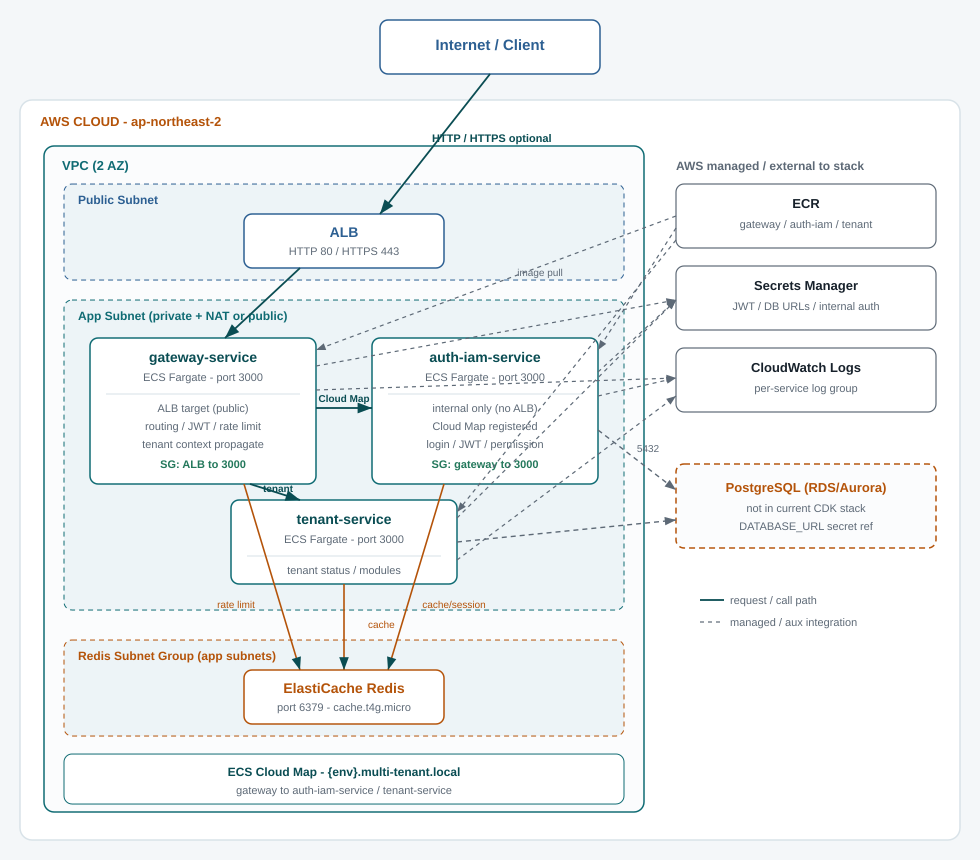

Infra · CDK Review
CDK 인프라 코드 분석
infra/cdk의 AWS CDK 코드를 파일별·기능별로 정리한 문서입니다.
현재 스택은 gateway-service, auth-iam-service, tenant-service를
하나의 CloudFormation 스택으로 함께 배포하며, 내부 서비스는 ECS Cloud Map 내부 DNS로 연결합니다.
이 문서는 CDK 코드 기준의 아키텍처 현황입니다. 현재 AWS 계정에 리소스가 실행 중이라는 의미는 아니며, 테스트 배포 리소스는 비용 절감을 위해 삭제되었을 수 있습니다.
검토 기준일: 2026-06-10
이 문서는 2026-06-10 당시의 인프라 스냅샷입니다. 최신 gateway/BFF/domain 연결과 CDK 차이는 2026-06-18 인프라 문서를 기준으로 확인합니다.
전체 구조
현재 CDK는 단일 스택만 정의하며, 스택 이름은 {project}-{env}-gateway-service-stack입니다.
| 파일 | 역할 |
|---|---|
bin/app.ts | CDK 앱 진입점. context를 읽어 스택을 인스턴스화 |
lib/gateway-service-stack.ts | 실제 AWS 리소스 정의 (gateway + auth-iam + tenant) |
cdk.json | CDK CLI 설정과 기본 context |
cdk.context.json | 가용 AZ 조회 결과 캐시 |
package.json | @multi-tenant/infra-cdk 패키지·스크립트 |
tsconfig.json | TypeScript 컴파일 설정 |
루트에서 pnpm infra:synth, infra:diff, infra:deploy로 호출합니다.
파일별 설명
bin/app.ts — CDK 앱 진입점
CDK App을 만들고 GatewayServiceStack 하나를 인스턴스화합니다. cdk.json 또는 CLI -c key=value로 context를 주입합니다. desired count context는 0 이상의 정수만 허용하며 잘못된 값은 synth/deploy 전에 실패합니다.
gatewayImageTag, gatewayDesiredCount, gatewayUseNatGateway, gatewayRedisNodeType, ACM/도메인/CORS/JWT secret
authImageTag, authDesiredCount, authCorsAllowedOrigins, authJwtAlgorithm, DB/JWT/internal secret ARN
tenantImageTag, tenantDesiredCount, tenantCorsAllowedOrigins, DB/internal secret ARN
project=multi-tenant, envName=dev, defaultRegion=ap-northeast-2, CDK 단독 실행의 desired count 기본값은 모두 0
lib/gateway-service-stack.ts — 핵심 인프라 스택
gateway-service, auth-iam-service, tenant-service 배포에 필요한 AWS 리소스를 한 스택에 모두 정의합니다. 네이밍은 {project}-{env} 접두사를 사용합니다.
infra/cdk/lib/gateway-service-stack.ts
cdk.json / cdk.context.json
app 실행 명령(node --loader ts-node/esm bin/app.ts)과 기본 context를 저장합니다.
계정 252660243277, region ap-northeast-2의 가용 AZ 목록 캐시입니다.
package.json / tsconfig.json
| 스크립트 | 역할 |
|---|---|
synth | CloudFormation 템플릿 생성 |
diff | 배포 전 변경 diff |
deploy | AWS 배포 |
typecheck | 타입 검사만 수행 |
의존성: aws-cdk-lib, constructs / dev: aws-cdk CLI. tsconfig는 루트 tsconfig.base.json을 상속합니다.
기능별 리소스
gateway-service-stack.ts가 생성하는 AWS 리소스를 기능 단위로 정리합니다.

| 기능 | gateway-service | auth-iam-service | tenant-service |
|---|---|---|---|
| ECR repository | O | O | O |
| ECS Fargate task/service | O | O | O |
| ALB 노출 | O (public) | X (내부 전용) | X (내부 전용) |
| Cloud Map 등록 | - | O | O |
| ElastiCache Redis 접근 | rate limit | cache/session | cache/readiness |
| Secrets Manager | JWT_SECRET, tenant internal auth | DB URL, JWT, internal auth | DB URL, internal auth |
| CloudWatch Logs | O | O | O |
| RDS/PostgreSQL | - | CDK 미포함 (외부 secret 참조) | CDK 미포함 (외부 secret 참조) |
2 AZ. gatewayUseNatGateway=true이면 private subnet + NAT Gateway 1개, false이면 public subnet만 사용합니다.
Fargate 클러스터에 Container Insights V2와 Cloud Map private DNS namespace {env}.multi-tenant.local을 구성합니다.
ALB SG, gateway SG, auth SG, tenant SG, redis SG. 내부 서비스는 gateway SG에서 오는 3000만 허용하고 ALB에 직접 노출하지 않습니다.
1노드(기본 cache.t4g.micro). gateway rate limit, auth cache/session, tenant cache/readiness에서 공유합니다.
인터넷 facing. ACM ARN이 있으면 HTTPS 443 listener를 만들고 HTTP 80은 HTTPS로 리다이렉트합니다. gateway만 target group에 연결합니다.
gateway는 auth를 http://auth-iam-service.{env}.multi-tenant.local:3000/api/auth, tenant를 http://tenant-service.{env}.multi-tenant.local:3000으로 호출합니다.
주요 CfnOutput: GatewayServiceRepositoryUri, GatewayLoadBalancerDns, GatewayRedisEndpoint, AuthIamServiceRepositoryUri, AuthIamServiceInternalUrl, TenantServiceRepositoryUri, TenantServiceInternalUrl 등.
현재 배포 상태 해석
CDK synth 기준으로 gateway-service, auth-iam-service, tenant-service 배포 리소스가 모두 정의되어 있습니다.
이 문서만으로 실제 AWS 리소스 실행 여부를 판단하지 않습니다. 콘솔 또는 AWS CLI에서 CloudFormation stack, ECS service, ALB, ECR을 확인해야 합니다.
테스트 리소스는 비용 절감을 위해 삭제하거나 desired count를 0으로 낮출 수 있습니다. NAT Gateway, ALB, ElastiCache는 task가 0이어도 비용이 발생할 수 있습니다.
Auth/IAM 실행 전 필수 조건
authDesiredCount=1로 올리기 전에 이미지와 runtime secret이 준비되어 있어야 합니다.
| 항목 | CDK context | 용도 |
|---|---|---|
| Auth/IAM Docker image | authImageTag | ECR에 push된 auth-iam-service image tag |
| PostgreSQL URL secret | authDatabaseUrlSecretArn | ECS task의 DATABASE_URL secret |
| JWT secret | authJwtSecretArn | HS256 access token 서명 secret |
| JWT key pair | authJwtPrivateKeySecretArn, authJwtPublicKeySecretArn | RS256 사용 시 private/public key secret |
| Internal auth secret | authInternalAuthSecretArn | gateway, BFF, domain service의 내부 호출 인증 |
secret 없이 task를 실행하면 컨테이너가 시작되어도 /ready의 database, jwt, security check가 실패할 수 있습니다.
Tenant 실행 전 필수 조건
tenantDesiredCount=1로 올리기 전에 이미지와 runtime secret이 준비되어 있어야 합니다.
| 항목 | CDK context | 용도 |
|---|---|---|
| Tenant Docker image | tenantImageTag | ECR에 push된 tenant-service image tag |
| PostgreSQL URL secret | tenantDatabaseUrlSecretArn | ECS task의 DATABASE_URL secret |
| Internal auth secret | tenantInternalAuthSecretArn | gateway-service와 tenant-service가 공유하는 내부 호출 인증 secret |
| Gateway tenant check | gatewayTenantStatusCheckEnabled | gateway가 tenant-service 상태 API를 호출할지 결정. 기본값은 false |
Redis 공유 기준
현재 Redis는 gateway-service, auth-iam-service, tenant-service가 하나의 ElastiCache Redis를 공유합니다.
초기 dev/staging 단계에서 비용과 CDK 복잡도를 낮추기 위한 선택입니다. 서비스별 Redis를 만들면 ElastiCache 노드, subnet group, security group, 설정 값이 함께 늘어납니다.
서비스별 key prefix를 사용해 gateway rate limit key, auth cache/session key, tenant cache key가 섞이지 않도록 관리해야 합니다.
prod 전에는 gateway rate-limit Redis, auth Redis, tenant Redis를 분리할지 결정해야 합니다. 장애 격리와 부하 격리가 필요하면 서비스별 또는 용도별 Redis 분리가 적합합니다.
이전 대비 변경점
직전 버전은 gateway-service와 auth-iam-service 중심 스택이었고, 현재는 tenant-service가 같은 스택에 추가되었습니다.
| 영역 | 이전 | 현재 |
|---|---|---|
| 배포 대상 | gateway + auth-iam-service | gateway + auth-iam-service + tenant-service |
| 서비스 디스커버리 | auth Cloud Map private DNS | auth + tenant Cloud Map private DNS |
| ECR / ECS 서비스 | 각 2개 | 각 3개 |
| Redis 접근 | gateway + auth | gateway + auth + tenant |
| tenant upstream URL | http://tenant-service:3000 placeholder | Cloud Map 내부 DNS로 실제 연결 |
| Security Group | 4개 | 5개 (tenant SG 추가) |
| CDK region 결정 | CDK_DEFAULT_REGION 우선 | defaultRegion 고정 |
| 리소스 태그 | Service=gateway-service 포함 | Service 태그 제거 |
| RDS PostgreSQL | CDK 없음 | 여전히 CDK 없음 |
아직 반영되지 않은 부분
deploy-gateway-service.yml은 gateway image, deploy-auth-iam-service.yml은 auth image, deploy-tenant-service.yml은 tenant image build/push와 대상 서비스 desired count 실행을 담당합니다. 세 workflow 모두 자동 push 배포 없이 수동 실행만 허용하며, 비대상 서비스 desired count와 image tag는 명시 필수입니다.
authDatabaseUrlSecretArn으로 기존 DB secret만 참조합니다. DB 인스턴스와 SG는 CDK에 없습니다.
Route53, EventBridge, SQS, S3는 아직 CDK로 정의되지 않았습니다.
수동 배포 Workflow
현재 GitHub Actions 배포는 모두 workflow_dispatch 전용입니다. push, pull_request, schedule 자동 트리거는 사용하지 않습니다.
| Workflow | 빌드/푸시 대상 | 대상 서비스 기본 최종 desired count | 다른 서비스 처리 | 필수 secret guard |
|---|---|---|---|---|
deploy-gateway-service.yml |
gateway-service image | GATEWAY_DESIRED_COUNT=1 |
auth/tenant desired count와 image tag 명시 필수 | GATEWAY_JWT_SECRET_ARN |
deploy-auth-iam-service.yml |
auth-iam-service image | AUTH_DESIRED_COUNT=1 |
gateway/tenant desired count와 image tag 명시 필수 | DB URL, JWT secret/key, internal auth secret |
deploy-tenant-service.yml |
tenant-service image | TENANT_DESIRED_COUNT=1 |
gateway/auth desired count와 image tag 명시 필수 | DB URL, internal auth secret |
세 workflow는 모두 같은 CDK 스택을 갱신합니다. 비대상 서비스 값이 비어 있으면 workflow가 실패하므로, 처음 인프라만 만들 때도 명시적으로 0과 사용할 image tag를 설정해야 합니다. 해당 서비스 desired count가 0보다 크면 runtime secret ARN도 필요합니다.
배포 시 context 예시
dev에서 비용을 줄여 확인할 때는 NAT Gateway를 끄고, 세 서비스 desired count를 0으로 둔 상태에서 ECR과 기본 인프라를 먼저 만듭니다.
# 1단계: 인프라만 생성 (태스크 0, dev 비용 절감용 public subnet 배치)
pnpm --filter @multi-tenant/infra-cdk exec cdk deploy \
-c gatewayDesiredCount=0 \
-c authDesiredCount=0 \
-c tenantDesiredCount=0 \
-c gatewayUseNatGateway=false
# 2단계: 이미지 push 후 실행
pnpm --filter @multi-tenant/infra-cdk deploy \
-c gatewayDesiredCount=1 \
-c authDesiredCount=1 \
-c tenantDesiredCount=1 \
-c gatewayImageTag=latest \
-c authImageTag=latest \
-c tenantImageTag=latest \
-c gatewayJwtSecretArn=arn:aws:secretsmanager:... \
-c authDatabaseUrlSecretArn=arn:aws:secretsmanager:... \
-c authJwtSecretArn=arn:aws:secretsmanager:... \
-c authInternalAuthSecretArn=arn:aws:secretsmanager:... \
-c tenantDatabaseUrlSecretArn=arn:aws:secretsmanager:... \
-c tenantInternalAuthSecretArn=arn:aws:secretsmanager:...gatewayUseNatGateway=true는 private subnet + NAT Gateway 구성이며 dev에서도 NAT Gateway 비용이 발생합니다.
GitHub Actions로 서비스별 배포를 실행할 때는 같은 스택의 비대상 서비스가 실수로 내려가지 않도록 비대상 서비스의 desired count와 image tag를 모두 GitHub Environment variable에 명시합니다.
검증 완료
2026-06-10 기준 아래 명령으로 CDK 타입 검사와 synth를 확인했습니다.
pnpm --filter @multi-tenant/infra-cdk typecheck
pnpm --filter @multi-tenant/infra-cdk exec cdk synth \
-c gatewayDesiredCount=0 \
-c authDesiredCount=0 \
-c tenantDesiredCount=0 \
-c gatewayUseNatGateway=falsesynth 결과에서 AuthIamServiceRepositoryUri, TenantServiceRepositoryUri, AuthIamServiceInternalUrl, TenantServiceInternalUrl, 각 서비스 desired count 0, ap-northeast-2 region 설정을 확인했습니다.